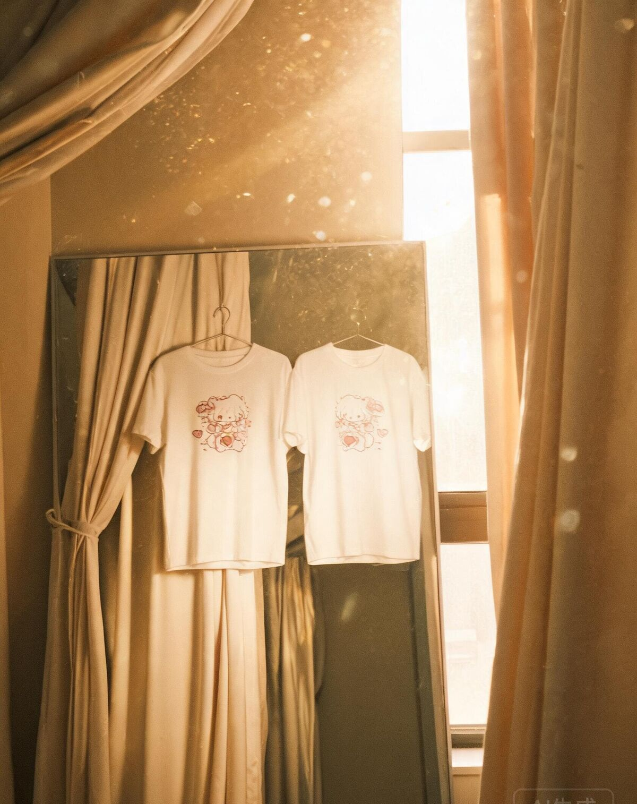
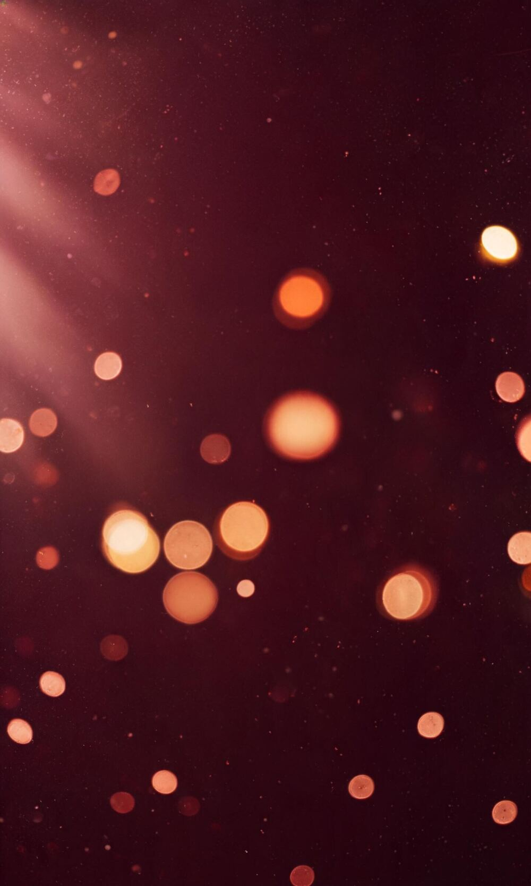
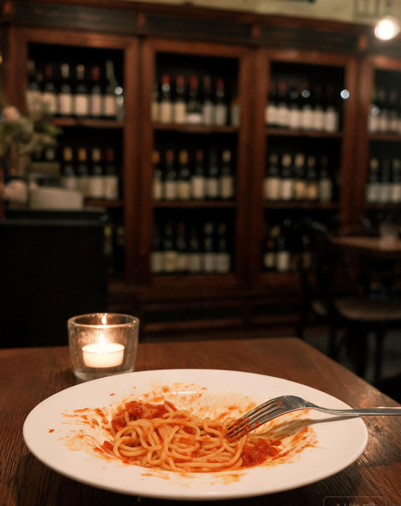
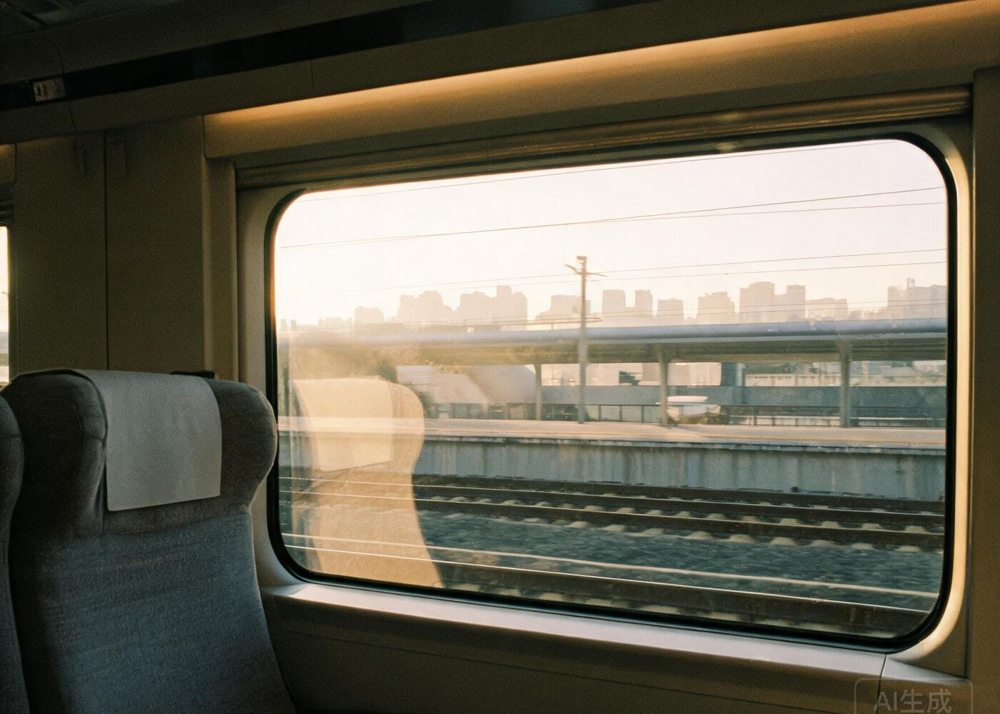

穿一样的衣服，比一样的心
你举着手比心，我举着手机拍镜子。两件一模一样的白 T，连笑都像商量好的。那天我嘴上嫌幼稚，其实心里偷偷高兴了很久——原来和一个人穿一样的衣服，是这么值得炫耀的事。

这五张照片里的每一个你，我都想好好珍惜。
可我最近偏偏把最不好的样子，留给了最好的你。
这五张照片，是我们最普通、也最舍不得的五个瞬间。没有刻意的布景，没有摆好的姿势，就是你和我，在很平常的日子里，刚好被镜头留下。
我把它们放在这封信的最前面，是想先提醒自己：我拥有的这些好，从来都不是理所当然的。你会笑、会闹、会靠过来、会把头歪向我，这些都是你愿意，才有的。
然后，才敢说那句我一直没说好的话——
雪愉宝宝，对不起。

你举着手比心，我举着手机拍镜子。两件一模一样的白 T，连笑都像商量好的。那天我嘴上嫌幼稚，其实心里偷偷高兴了很久——原来和一个人穿一样的衣服，是这么值得炫耀的事。

盘子里只剩一点番茄酱，叉子还搭在边上。你戴着小帽子，我穿着那件高领毛衣挤在你旁边自拍。我们没去多贵的地方，可那顿饭我记到现在——因为对面坐着的人是你。

你戴黑框眼镜，托着脸，我把脸贴过去亲你。窗外的站台一格一格往后退，我却只想着：再慢一点就好了，这一程再长一点就好了。
灯笼一排排亮起来，你穿那件绿旗袍，头发垂在肩上。我站在你后面，其实一直在看你。那会儿我心里想的是：怎么会有这么好看的人，愿意跟我站在一起。
你头上别了朵白花，手托着脸，我凑过去亲你。山脚下的灯一盏盏亮起来，我那天只顾着看你，风景反而成了背景。
对外人客客气气，回家却一句就急。你明明是最不该被我凶的人，我却总把耐心用完在外面。
你要的是被抱一下、被站在你这边，我却急着证明「我不是那个意思」。道理讲赢了，你更远了。
不是做不到，是没放在心上。可感情就是被这些「等会儿」一点点磨薄的。
你一次次先低头、先说话、先原谅，我就真的以为没关系。忘了你也会累，也会需要被哄。
这四件事，没有一件是「因为你」。
都是我该改的。
雪愉宝宝：
对不起。
这三个字我在心里说过很多遍。可每次真的到你面前，它就变成了辩解、沉默，或者一句干巴巴的「我不是这个意思」。后来我才明白，你要的从来不是我把道理讲赢，而是我站在你这边。
我知道「对不起」很轻。轻到说出来像一阵风，吹过去就没了。所以我把想说的话放在这里——它不会跟着时间消失，你什么时候想翻，它都在；你哪一天还生气，也可以回来再看一遍，看我是不是真的做到了。
我承认我不够细心。你情绪不对的时候，我总要过很久才发现；你说「没事」的时候，我居然真的就信了。以后我会记住：你说没事，多半是有事；你不说话，多半是在等我先开口。
我也想跟你说清楚，我难过的不是「吵架」这件事，是吵完之后那几天的我们。你回消息变短，我不敢多问；明明两个人都还在意，却谁都不肯先软下来。那种感觉，我不想再经历第二次了。
所以这次我不说「以后不会了」这种空话。我只说我能做到的：先听你说完，再讲我的想法；当天的事当天说清楚；答应的每一件小事，做到再说。
雪愉宝宝，我不奢望你立刻就原谅我。你可以生气，可以不理我，可以把这几天的委屈都留到想说的时候再说。我只希望你知道，我没有走，也没有觉得你麻烦。
我在这儿，等你。
你说不舒服的时候，我先停下来听，不急着解释，也不急着证明自己没错。
有情绪就说，说不清楚就先抱一下。当天的疙瘩，当天解开，不留到第二天。
大到一起去的地方，小到你随口说想吃的店，都记下来，做到了再提。
不被工作、手机和别的事占走。吃饭、散步、看剧都行，只要你在我旁边。
讲不赢也没关系。你比道理重要，这句话我以后用做的，不用说的。
以上五条，有效期：很久很久。
不用现在就回答。你点哪一个，我都认真接住。